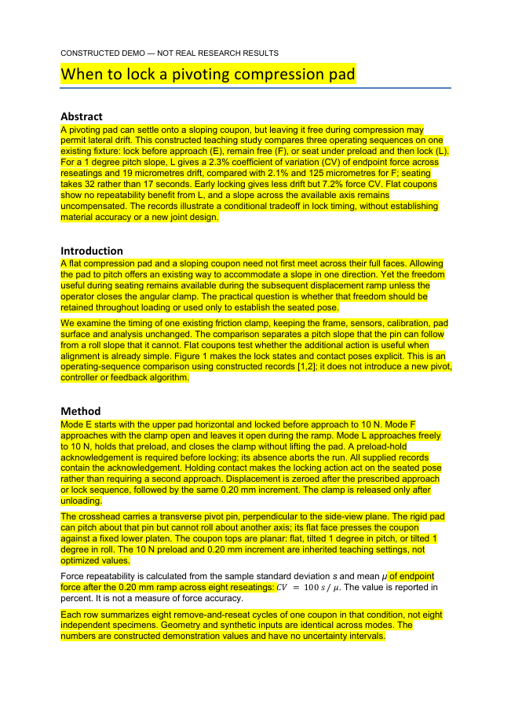

材料齐了，读者却还没看见问题
Three modes were tried with an existing pivoting compression pad. The components included a frame, a pin, a clamp, a pad and a lower platen. The records include nine rows.
In the pitch condition, mode L had a force coefficient of variation of 2.3%, drift of 19 micrometres and seating time of 32 seconds.
把“何时锁住压头”放到前面
先允许压头贴合斜面，
再锁住它，能得到什么，又付出什么？
在 1° 俯仰斜面记录中，相比全程自由，先就位再锁定的横向漂移从 125 μm 降至 19 μm；就位时间从 17 秒增至 32 秒。
全程自由与先就位再锁定的力变异系数分别为 2.1% 和 2.3%；没有不确定性估计，不能据此声称等效或显著差异。
让操作步骤有理由，也有证据
In mode L it was unlocked during approach, held at the preload, locked without lifting, and then loaded.
交代了动作，还没有解释动作之间的关系。
A preload-hold acknowledgement is required before locking; its absence aborts the run. All supplied records contain the acknowledgement.
Holding contact makes the locking action act on the seated pose rather than requiring a second approach.
保持接触、确认预载、再锁定。缺失确认时中止是规则，未冒充已经做过的失败实验。
交付能继续修改、也能逐处核对的稿件

黄色审阅稿